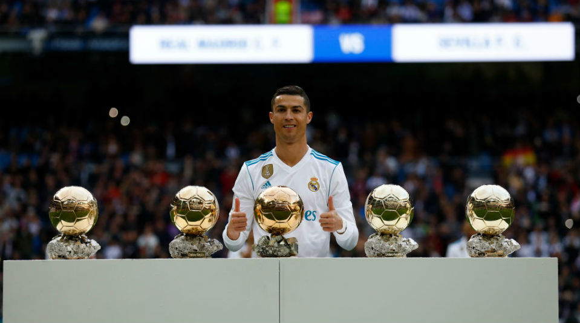
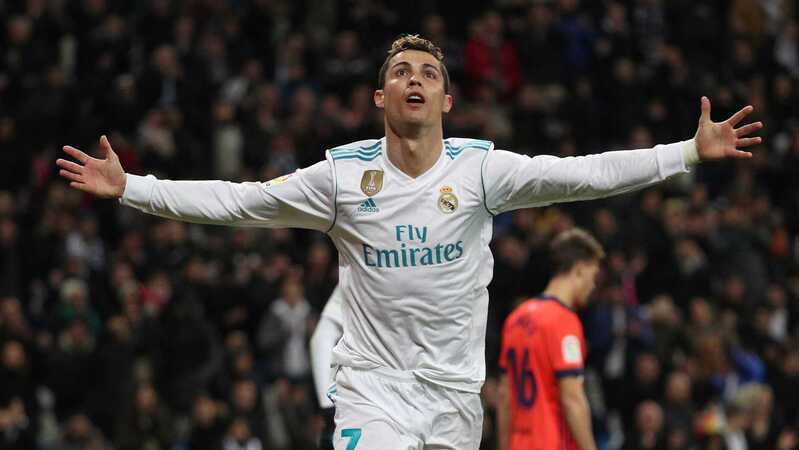

Como Cristiano se tornou o artilheiro do maior clube do mundo
Cristiano Ronaldo faz parte da lenda do Real Madrid e será sempre recordado como um dos grandes símbolos da sua história.
Foi apresentado no Santiago Bernabéu a 6 de Julho de 2009, acompanhado por Eusébio e Alfredo Di Stéfano, e desde entao não parou de marcar golos: 451
em 438 jogos oficiais com o Real Madrid (mais de um por encontro). Além disso, marcou em todas as competições: 312 na Liga, 105 na Champions, 22 na Taça do Rei,
6 no Mundial de Clubes, 4 na Supertaça de Espanha e 2 na Supertaça Europeia.
o maior artilheiro da história da Liga dos Campeões e recordista 7 vezes melhor marcador da competição com incriveis 140 gols.
